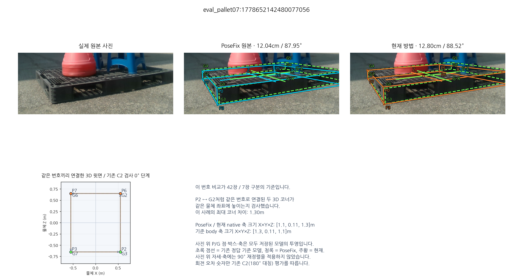
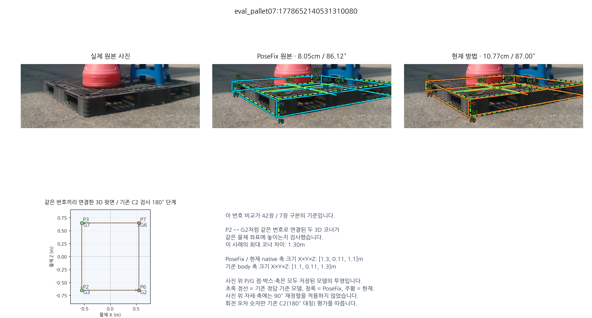
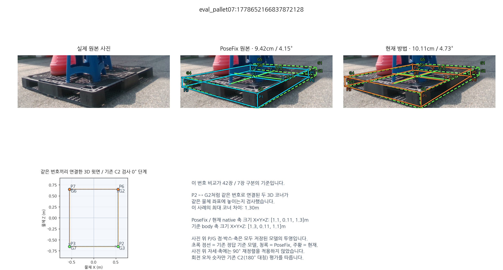
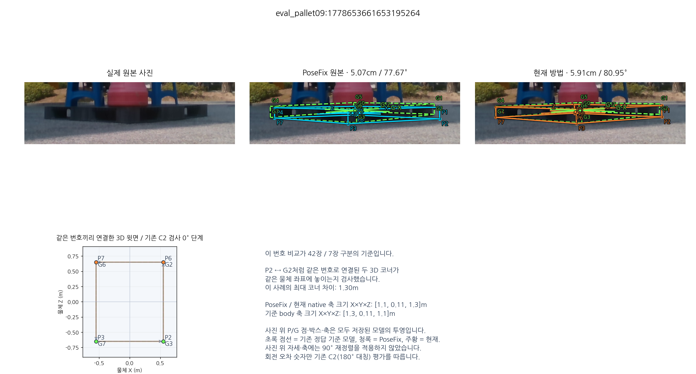
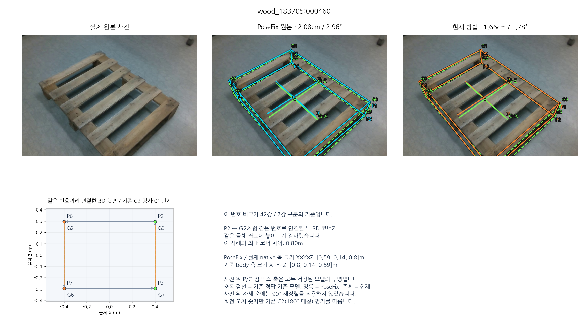
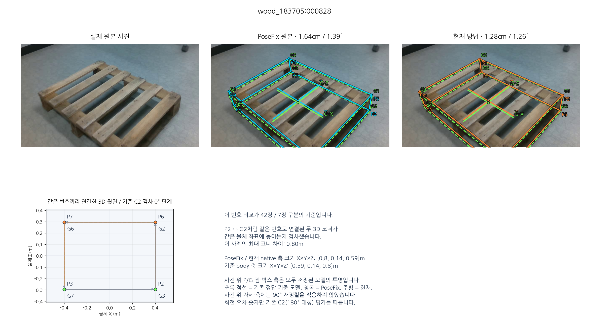
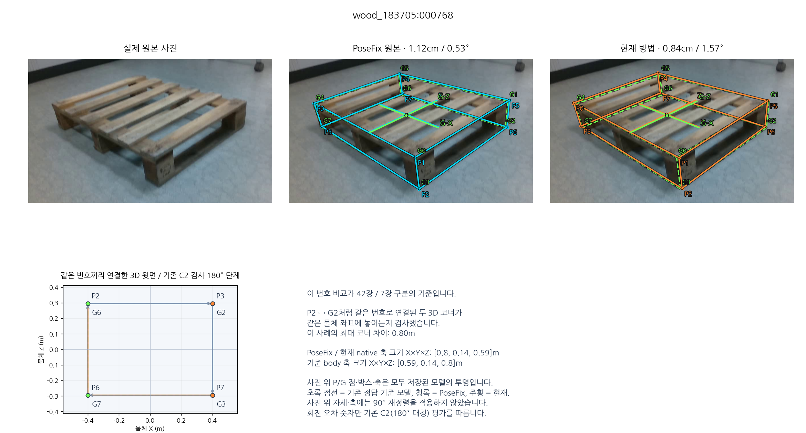

실제 7장: PoseFix와 현재 자세 비교
“42장 / 7장”은 정사각형·직사각형 구분이 아닙니다. 같은 KP 번호가 두 3D 모델에서 같은 모서리를 뜻하는지 검사한 구분입니다. 사진 위 박스와 아래 번호 배치를 함께 보면 차이를 볼 수 있습니다.
이 페이지는 현재 모델 등록에서 그 검사를 통과하지 않은 7장을 모두 보여줍니다. 이 7장에서는 PoseFix도 같은 크기·등록축을 선택했습니다. 사진·정답을 잘못된 데이터라고 판정한 표시는 아닙니다. 성능 비교에는 전체 49장을 포함했습니다.
초록 점선 = 기존 정답 모델 투영청록 = PoseFix 원본 모델 투영주황 = 현재 방법 모델 투영
PoseFix RAW / 현재 최신 B·I 보정 + O·T·U 영역 PnP. 저장된 결과를 시각화했고, 추론·PnP 재계산은 하지 않았습니다. 사진 위 축은 물리 X/Z축이며 원래 저장된 방향을 유지했습니다. 숫자 회전 오차는 C2 대칭 평가입니다.
표시:각 사례의 “큰 이미지 열기”로 확대할 수 있습니다.
PoseFix: 12.04cm / 87.95°현재: 12.80cm / 88.52°기존 번호 대응 검사 차이 1.30m

원본 / PoseFix / 현재를 같은 영상·카메라로 표시했습니다. P0~P7은 각 방법의 모델 코너, G0~G7은 기존 reference를 고정 mapping으로 연결한 모델 코너입니다. 실제 영상에서 검출한 점과 구분합니다.
PoseFix: 8.05cm / 86.12°현재: 10.77cm / 87.00°기존 번호 대응 검사 차이 1.30m

원본 / PoseFix / 현재를 같은 영상·카메라로 표시했습니다. P0~P7은 각 방법의 모델 코너, G0~G7은 기존 reference를 고정 mapping으로 연결한 모델 코너입니다. 실제 영상에서 검출한 점과 구분합니다.
PoseFix: 9.42cm / 4.15°현재: 10.11cm / 4.73°기존 번호 대응 검사 차이 1.30m

원본 / PoseFix / 현재를 같은 영상·카메라로 표시했습니다. P0~P7은 각 방법의 모델 코너, G0~G7은 기존 reference를 고정 mapping으로 연결한 모델 코너입니다. 실제 영상에서 검출한 점과 구분합니다.
PoseFix: 5.07cm / 77.67°현재: 5.91cm / 80.95°기존 번호 대응 검사 차이 1.30m

원본 / PoseFix / 현재를 같은 영상·카메라로 표시했습니다. P0~P7은 각 방법의 모델 코너, G0~G7은 기존 reference를 고정 mapping으로 연결한 모델 코너입니다. 실제 영상에서 검출한 점과 구분합니다.
PoseFix: 2.08cm / 2.96°현재: 1.66cm / 1.78°기존 번호 대응 검사 차이 0.80m

원본 / PoseFix / 현재를 같은 영상·카메라로 표시했습니다. P0~P7은 각 방법의 모델 코너, G0~G7은 기존 reference를 고정 mapping으로 연결한 모델 코너입니다. 실제 영상에서 검출한 점과 구분합니다.
PoseFix: 1.64cm / 1.39°현재: 1.28cm / 1.26°기존 번호 대응 검사 차이 0.80m

원본 / PoseFix / 현재를 같은 영상·카메라로 표시했습니다. P0~P7은 각 방법의 모델 코너, G0~G7은 기존 reference를 고정 mapping으로 연결한 모델 코너입니다. 실제 영상에서 검출한 점과 구분합니다.
PoseFix: 1.12cm / 0.53°현재: 0.84cm / 1.57°기존 번호 대응 검사 차이 0.80m

원본 / PoseFix / 현재를 같은 영상·카메라로 표시했습니다. P0~P7은 각 방법의 모델 코너, G0~G7은 기존 reference를 고정 mapping으로 연결한 모델 코너입니다. 실제 영상에서 검출한 점과 구분합니다.